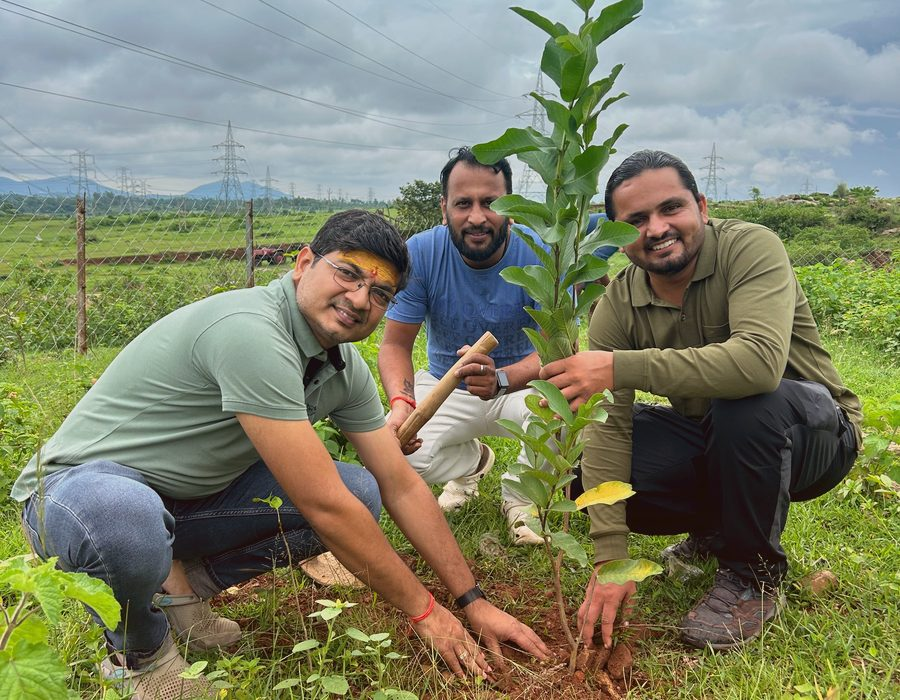
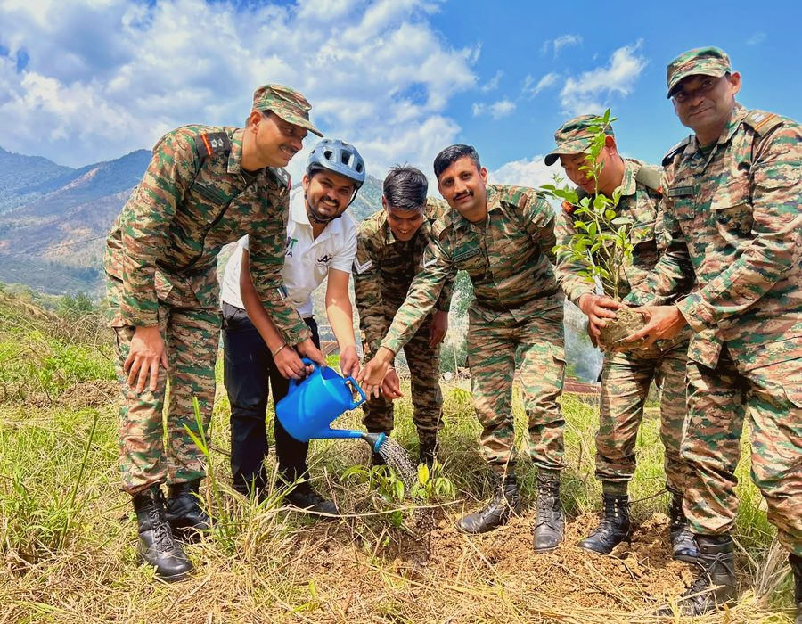
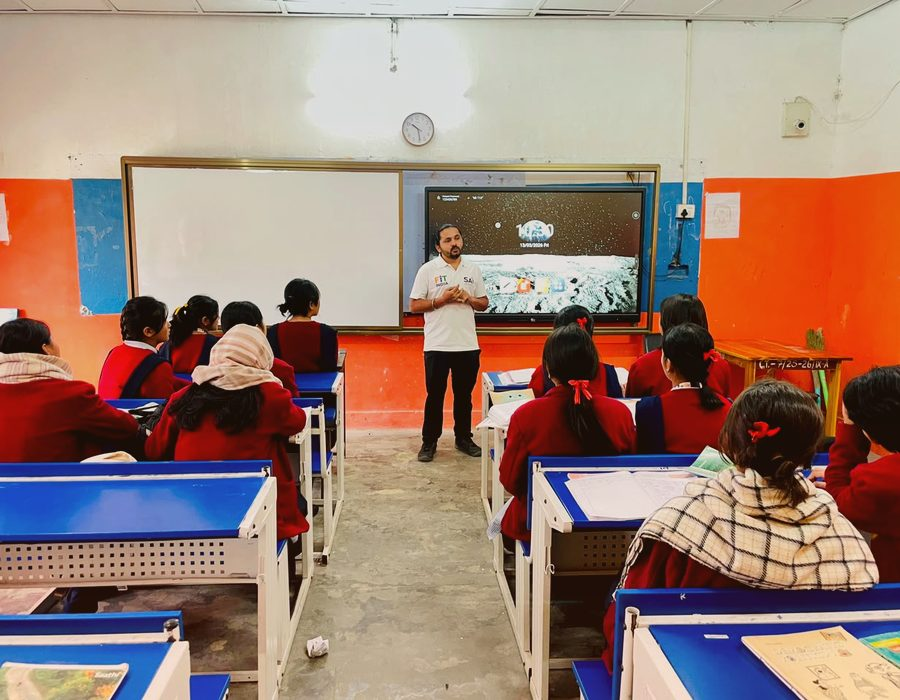
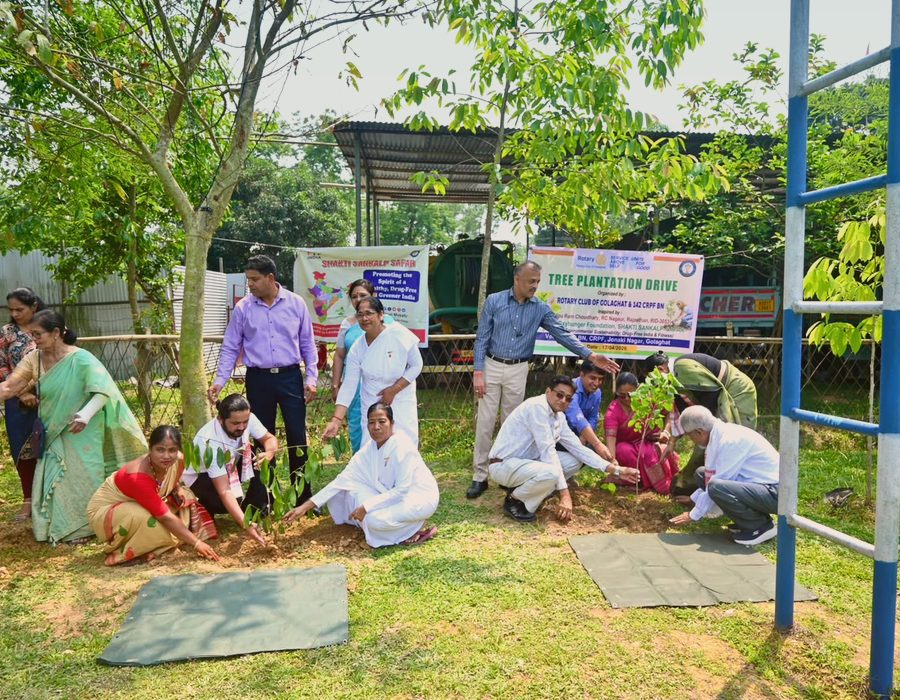
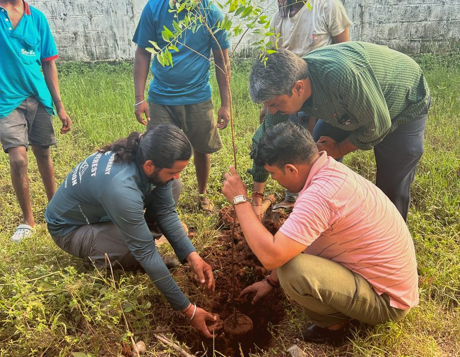

OxyHunger Foundation
Founded by Pappu Ram Choudhary, the organisation carrying Shakti Sankalp Safar’s work forward off the road — turning one man’s pledge into a repeatable, community-driven model for afforestation and youth engagement. The Safar itself is jointly led by Founder Pappu Ram Choudhary and Co-Founder Subodh Vijay Gangurde.
Founder & Co-Founder
Two athletes, one shared resolve for a greener, drug-free, physically fit India.
Pappu Ram Choudhary
Known as the “Oxygen Man of India,” Pappu leads the 60,000+ km solo cycling movement across every Indian state and union territory, and founded the OxyHunger Foundation to carry the plantation and youth-outreach work forward at scale.
Subodh Vijay Gangurde
An SAI-recognised record holder and official Fit India Ambassador, Subodh brings his own 1,00,000 km “Respect the Heritage of India” cycling journey and 371-fort mountaineering record into the shared mission, co-leading Shakti Sankalp Safar’s environmental and de-addiction work.
Three pillars behind every Foundation programme
Environment Protection & Promotion
Large-scale plantation drives and public awareness campaigns that connect young people directly to the work of protecting nature. Neem, Peepal and Banyan are prioritised for their oxygen output — Peepal is estimated to absorb roughly 100% and Banyan roughly 80% of the carbon dioxide around them, making both especially valuable for reforestation.
Drug-Free Society
Awareness sessions and workshops in schools and colleges that steer young people’s energy away from substance abuse and toward a healthy, positive mindset — carried under the slogan “Leave the Addiction, Plant a Tree.”
Healthy & Fit Life
Spreading awareness of physical and mental well-being, and encouraging sport, fitness and a disciplined daily routine in everyday life — in line with the national Fit India Movement.
Combating environmental degradation through active afforestation and community engagement.
OxyHunger Foundation exists to make sure Pappu Ram Choudhary’s roadside plantations become long-term, community-owned green cover — not a one-time gesture. The Foundation works with schools, Rotary clubs, the Indian Army, Assam Rifles, the CRPF, and local administrations along the Shakti Sankalp Safar route to plant, protect and monitor indigenous trees, while running parallel programs on road safety and de-addiction.
“A tree planted without a community to protect it is just a sapling waiting to fail. Our job is to build that community first.”

Community plantation driveWhat OxyHunger runs on the ground

Tree Plantation Drives
Neem, Peepal and Banyan saplings planted along the Safar route in partnership with schools, Rotary clubs, the Army, Assam Rifles and the CRPF — 32,500+ trees and counting (35,000+ as of the latest count), toward the shared 1,00,000-tree pledge of both Founder and Co-Founder.

School Awareness Programs
Interactive sessions on climate responsibility, road safety and discipline, delivered by Pappu himself at schools and colleges along every leg of the journey.

Anti-Drug Campaigns
Community talks and youth outreach positioning fitness and purpose as an alternative to substance dependency, especially in campuses along the route.
Institutions standing behind the mission
 173 & 142 Bn CRPF
173 & 142 Bn CRPF Assam Rifles
Assam Rifles Indian Army
Indian Army
District administrationsVolunteer with the Foundation
Help organise a plantation drive, host a school session, or support the Safar when it passes through your city. Tell us a bit about yourself and we’ll be in touch.
- City-based volunteer coordination for plantation drives
- School & college outreach hosting
- On-route hospitality & logistics support
Corporates & institutions welcome
OxyHunger Foundation partners with CSR teams, educational institutions and civic bodies to scale plantation drives and awareness programs beyond what one cyclist can reach alone.